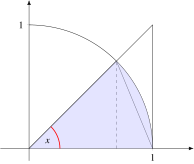

8 2024-01-11
Examen de Análisis I
Ejercicio 8.1 Dar ejemplos de conjuntos que cumplan lo siguiente y demostrarlo.
- Un conjunto que tenga exactamente dos puntos de acumulación.
- Un conjunto que no sea abierto ni cerrado.
Existen muchos conjuntos que cumplen lo que se pide, así que daremos uno sencillo. Si consideramos el conjunto \(A=\{\frac{1}{n}: n\in\mathbb{N}\}\), podemos ver fácilmente que \(0\) es un punto de acumulación de \(A\), ya que para cualquier \(\varepsilon>0\), por la propiedad arquimediana es posible encontrar un \(n\in\mathbb{N}\) tal que \(\frac{1}{n}<\varepsilon\), y por tanto, el número \(\frac{1}{n}\) pertenece a \(A\) y también al entorno reducido \((-\varepsilon,\varepsilon)\setminus \{0\}\).
Veamos ahora que \(A\) no tiene más puntos de acumulación. Si \(x<0\) tomando \(\varepsilon = |x|\), el entorno reducido \((x-\varepsilon,x+\varepsilon)\setminus \{x\}\) solo contendría puntos negativos por lo que no contendría ningún punto de \(A\). Del mismo modo, \(x>1\) tomando \(\varepsilon = |x-1|\), el entorno reducido \((x-\varepsilon,x+\varepsilon)\setminus \{x\}\) solo contendría puntos mayores que \(1\) por lo que no contendría ningún punto de \(A\), ya que el máximo de \(A\) es \(1\). Finalmente, si \(0<x\leq 1\), por la propiedad arquimediana, existe \(n\in\mathbb{N}\) tal que \(\frac{1}{n+1}<x<\frac{1}{n}\). Tomando \(\varepsilon= \min(\{|x-\frac{1}{n+1}|, |x-\frac{1}{n}|\})\), también se cumple que el entorno reducido \((x-\varepsilon,x+\varepsilon)\setminus \{x\}\) no contiene puntos de \(A\).
Del mismo modo, si consideramos el conjunto \(B=\{1+\frac{1}{n}:n\in\mathbb{N}\}\), usando el mismo razonamiento se puede probar que su único punto de acumulación es \(1\).
Así pues, el conjunto \(A\cup B\) solo tiene puntos de acumulación, \(0\) y \(1\).
El caso más sencillo de un conjunto que no es ni abierto ni cerrado es un intervalo semiabierto, por ejemplo \([0,1)\). Este conjunto no es abierto porque el punto \(0\) no es un punto interior suyo, y tampoco es cerrado porque su complementario \(\overline{[0,1]} = (-\infty,0)\cup [1, \infty]\) tampoco es abierto, ya que que el punto \(1\) no es un punto interior suyo.
Ejercicio 8.2 El precio normalizado medio anual del metro cuadrado urbanizable en una ciudad sigue la sucesión
\[ a_1 = 1, \quad a_{n+1} = \sqrt{2a_n+3}\quad \forall n \in \mathbb{N}. \]
Estudiar si el precio converge a largo plazo y en tal caso calcular el valor límite.
Si calculamos los primeros términos de la sucesión
\[ a_1 = 1, \quad a_2 = \sqrt{2+3} \approx 2.2361, \quad a_3 \approx \sqrt{2\cdot 2.2361+3} \approx 2.7335, \quad a_4 \approx \sqrt{2\cdot 2.7335+3} \approx 2.9098, \ldots, \]
se intuye que que la sucesión es monótona creciente, pero vamos a probarlo por inducción. En primer lugar, \(a_1<a_2\). Supongamos ahora que \(a_{n-1}<a_n\), entonces
\[ a_{n-1}<a_n \Leftrightarrow 2a_{n-1}<2a_n \Leftrightarrow 2a_{n-1}+3<2a_n+3 \Leftrightarrow \sqrt{2a_{n-1}+3}<\sqrt{2a_n+3} \Leftrightarrow a_n<a_{n+1}, \]
y por tanto la sucesión es monótona creciente.
Veamos ahora, de nuevo por inducción, que está acotada superiormente por \(3\). En primer lugar, \(a_1<3\). Supongamos ahora que \(a_n<3\), entonces
\[ a_n<3 \Leftrightarrow 2a_n<2\cdot 3 \Leftrightarrow 2a_n+3<2\cdot 3 +3 \Leftrightarrow \sqrt{2a_n+3}<\sqrt{2\cdot 3 +3} \Leftrightarrow a_{n+1} < 3, \]
por lo que la sucesión está acotada superiormente.
Aplicando el teorema de la convergencia de sucesiones monótonas se puede concluir que la sucesión tiene límite \(a\). Para calcular el valor de \(a\) aprovecharemos la definición recurrente.
\[ a = \lim_{n\to\infty} a_n = \lim_{n\to\infty} a_{n+1} = \lim_{n\to\infty} \sqrt{2a_n+3} = \sqrt{2\lim_{n\to\infty} a_n + 3} = \sqrt{2a+3}, \]
y resolviendo la ecuación se tiene
\[ a = \sqrt{2a+3} \Leftrightarrow a^2 = 2a+3 \Leftrightarrow a^2-2a+3 = 0 \Leftrightarrow a = -1 \mbox{ o } a = 3. \]
Como la solución \(a=-1\) no puede ser al ser \((a_n)_{n=1}^\infty\) una sucesión de términos positivos, se concluye que \(\lim_{n\to\infty} a_n = 3\), y por tanto el precio medio normalizado del metro cuadrado urbanizable converge a \(3\).
Ejercicio 8.3 Calcular las asíntotas de la función \(f(x) = \ln(\sqrt{x^4e^x})\). ¿Hacia dónde se aproxima pendiente de la recta tangente a \(f\) cuando \(x\) tiende a infinito?
Asíntotas verticaes
Para determinar las asíntotas verticales primero debemos estudiar el dominio de la función. Como el dominio de la función logarítmica es \(\mathbb{R}⁺\), \(f(x)\) está definida en los valores de \(x\) tales que \(\sqrt{x^4e^x}>0\), y esto ocurre para cualquier \(x\neq 0\), por tanto, el único punto donde puede haber asíntota vertical es en \(x=0\). Estudiamos los límites laterales de la función en este punto.
\[\begin{align*} \lim_{x\to 0^-} f(x) &= \lim_{x\to 0^-} \ln(\sqrt{x^4e^x}) = -\infty.\\ \lim_{x\to 0^+} f(x) &= \lim_{x\to 0^+} \ln(\sqrt{x^4e^x}) = -\infty. \end{align*}\]
Como ambos límites no existen, no hay asíntota vertical en \(x=0\).
Asíntotas horizontales
Para determinar las asíntotas horizontales, tenemos que calcular los límites en el infinito.
\[\begin{align*} \lim_{x\to -\infty} f(x) &= \lim_{x\to -\infty} \ln(\sqrt{x^4e^x}) \lim_{x\to -\infty} \frac{1}{2}\ln(x^4e^x) = -\infty \tag{1}\\ \lim_{x\to \infty} f(x) &= \lim_{x\to \infty} \ln(\sqrt{x^4e^x}) = \infty \end{align*}\] (1) \(x^4e^x\) es indeterminado cuando \(x\to-\infty\), pero como la función exponencial crece más rápidamente que cualquier función potencial, se tiene que $\(\lim_{x\to-\infty} x^4e^x = 0\).
Y como ambos límites tampoco no existen, no hay asíntotas horizontales.
Asíntotas oblicuas
Finalmente para ver si hay asíntotas oblicuas, tenemos que estudiar los siguientes límites en el infinito.
\[\begin{align*} \lim_{x\to -\infty} \frac{f(x)}{x} &= \lim_{x\to -\infty} \frac{\ln(\sqrt{x^4e^x})}{x} = \lim_{x\to -\infty} \frac{\ln(x^4e^x)}{2x} \\ &= \lim_{x\to -\infty} \frac{\ln(x^4)+x}{2x} = \lim_{x\to -\infty} \frac{\ln(x^4)}{2x} + \frac{1}{2} = \frac{1}{2} \tag{1}\\ \lim_{x\to \infty} f(x) -\frac{1}{2}x &= \lim_{x\to \infty} \ln(\sqrt{x^4e^x}) - \frac{x}{2} = \lim_{x\to \infty} \frac{1}{2}\ln(x^4e^x) - \frac{x}{2} \\ &= \lim_{x\to \infty} \frac{1}{2}(\ln(x^4)+x) - \frac{x}{2} = \lim_{x\to \infty} \frac{1}{2}\ln(x^4) = \infty \end{align*}\] (1) \(\frac{\ln(x^4)}{2x}\) es indeterminado cuando \(x\to\infty\), pero como la función logarítmica creces siempre más despacio que cualquier función lineal, al final se tiene \(\lim_{x\to\infty} \frac{\ln(x^4)}{2x} = 0\).
Como el último límite no existe, tampoco hay asíntota oblicua en \(\infty\) y si calculamos los límites en \(-\infty\) se obtiene lo mismo, por lo que no hay asíntotas oblicuas.
A pesar de no haber asíntotas oblicuas, como \(\lim_{x\to -\infty} \frac{f(x)}{x} =\frac{1}{2}\), la pendiente de la recta tangente a \(f\) cuanto \(x\to \infty\) tiende a \(\frac{1}{2}\).
Ejercicio 8.4 Sabiendo que el area del arco de la circunferencia unidad está comprendido entre las areas de los triángulos que se muestran en la siguiente figura cuando el ángulo \(x\) está en el primer cuadrante, demostrar que \(\operatorname{sen}(x)\) y \(x\) son infinitésimos equivalentes en \(0\).

Como se puede apreciar en la figura, el área del sector de la circunferencia unidad correspondiente a un ángulo \(x\) del primer cuadrante estará siempre contenido entre las áreas del triángulo pequeño y del grande.
Como el área del círculo unidad es \(pi\), es fácil ver que el área de este sector de círculo de ángulo \(x\) es \(x/2\).
Por otro lado, para calcular el área del triángulo pequeño, se observa que la base es \(1\), y la altura es el cateto opuesto del triángulo rectángulo inscrito en el círculo correspondiente al ángulo \(x\). Usando las razones trigonométricas de los triángulos rectángulos sabemos que \(\operatorname{sen}(x)\) es el cociente entre el cateto opuesto y la hipotenusa que vale \(1\), por lo que se concluye que la altura del triángulo pequeño es \(\operatorname{sen}(x)\), y su área es \(\operatorname{sen}(x)/2\).
Finalmente, para calcular el área del triángulo grande, volvemos a utilizar las razones trigonométricas de los triángulos rectángulos. Sabemos que \(\operatorname{tg}(x)\) es el cociente entre el cateto opuesto y el catego contiguo, pero como el cateto contiguo vale \(1\), se tiene que la altura del triángulo es \(\operatorname{tg}(x)\), por lo que su área es \(\operatorname{tg}(x)/2\)
Así pues, se tienen las siguientes inecuaciones,
\[ \frac{\operatorname{sen}(x)}{2}\leq \frac{x}{2}\leq \frac{\operatorname{tg}(x)}{2} \Leftrightarrow \operatorname{sen}(x)\leq x\leq \operatorname{tg}(x) \]
Si ahora dividimos por \(\operatorname{sen}(x)\) en todos los lados de las inecuaciones, al ser \(\operatorname{sen}(x)>0\) para culquier ángulo \(x\) del primer cuadrante se tiene
\[ \frac{\operatorname{sen}(x)}{\operatorname{sen}(x)}\leq \frac{x}{\operatorname{sen}(x)}\leq \frac{\operatorname{tg}(x)}{\operatorname{sen}(x)} \Leftrightarrow 1 \leq \frac{x}{\operatorname{sen}(x)}\leq \frac{1}{\cos(x)}. \]
Aplicando ahora el teorema de la compresión de funciones, como
\[ \lim_{x\to 0} 1 = \lim_{x\to 0} \frac{1}{\cos(x)} = 1, \]
podemos concluir que
\[ \lim_{x\to 0} \frac{x}{\operatorname{sen}(x)} = 1, \]
y esto prueba que, \(x\) y \(\operatorname{sen}(x)\) son infinitésimos equivalentes en \(0\).
Ejercicio 8.5 Un depósito para la recogida de agua de lluvia tiene forma de cono invertido con radio \(r=5\) m y altura \(h=5\) m. El depósito contiene agua hasta una altura de \(2\) m en el momento en que empieza a llover de manera que en el depósito entran \(0.5\) m\(^3\)/h, ¿cuál será la tasa de variación que experimentará el nivel de agua en el depósito en ese instante? Suponiendo que la intensidad de la lluvia no cambia, dar una aproximación lineal del tiempo necesario para que se llene el depósito.
El volumen de un cono de radio \(r\) y altura \(h\) viene dado por la función de dos variables \(V(r,h)=\frac{1}{3}\pi r^2h\), pero en el caso de este cono en particular, como el radio es igual a la altura, podemos expresar el volumen en función de la altura como \(V(h) = \frac{1}{3}\pi r^3\).
Cuando empieza a llover, el volumen de agua en el depósito empieza a cambiar a razón de \(0.5\) m\(^3\)/h, y por tanto, se tiene que \(\frac{dV}{dt} = 0.5\) m\(^3\)/h. Para calcular la tasa de variación instantánea de la altura con respecto al tiempo, es decir \(\frac{dh}{dt}\), podemos utilizar la regla de la cadena para calcular la derivada el volumen con respecto al tiempo, es decir,
\[ \frac{dV}{dt} = \frac{dV}{dh}\frac{dh}{dt}, \]
de donde se deduce que
\[ \frac{dh}{dt} = \frac{dV/dt}{dV/dh} = \frac{dV/dt}{\frac{1}{3}\pi 3h^2} = \frac{dV/dt}{\pi h^2}. \]
que en el instante en que comienza a llover, como \(h=2\) m, vale
\[ \frac{dh}{dt} = \frac{0.5}{\pi 2^2} \approx 0.0398 \mbox{ m/h}. \]
Para dar una aproximación lineal del tiempo que tardará en llenarse el depósito, podemos utilizar el diferencial del tiempo, se que según lo anterior será
\[ \frac{dh}{dt} = 0.0398 \Leftrightarrow \frac{dt} = \frac{dh}{0.0398}. \]
Como el depósito ya tiene agua hasta una altura de \(2\) m, para que acabe de llenarse faltarían \(3\) m, de manera que sustituyendo \(dh=3\) en la ecuación anterior se tiene
\[ \frac{dt} \approx \frac{3}{0.0398} \approx 75.3982 \mbox{ horas}. \]
Ejercicio 8.6 Calcular el polinomio de Maclaurin de tercer grado de la función \(f(x) = 2\sqrt[3]{{1 + x}}\) y utilizarlo para aproximar \(\sqrt[3]{9}\) dando una cota del error cometido.
La fórmula del polinomio de Maclaurin de orden \(3\) para la función \(f\) es
\[ P_{3,f,0} (x)= f(0) + f'(0)x + \frac{f''(0)}{2!}x^2 + \frac{f'''(0)}{3!}x^3, \]
de modo que tenemos que calcular hasta la tercera derivada de \(f\) en el 0.
\[\begin{align*} f(x) &= 2\sqrt[3]{{1 + x}}=2(1+x)^{1/3}, & \quad \quad & f(0) = 2(1+0)^{1/3}=2, \\ f'(x) &= 2\dfrac{1}{3}(1+x)^{-2/3}=\dfrac{2}{3}(1+x)^{-2/3}, & & f'(0) = \dfrac{2}{3}(1+0)^{-2/3}=\dfrac{2}{3},\\ f''(x) &= \dfrac{2}{3}\dfrac{-2}{3}(1+x)^{-5/3}=\dfrac{-4}{9}(1+x)^{-5/3}, & & f''(0) = \dfrac{-4}{9}(1+0)^{-5/3}=\dfrac{-4}{9},\\ f'''(x) &= \dfrac{-4}{9}\dfrac{-5}{3}(1+x)^{-8/3}=\dfrac{20}{27}(1+x)^{-8/3}, & & f'''(0) = \dfrac{20}{27}(1+0)^{-8/3}=\dfrac{20}{27}, \end{align*}\]
Sustituyendo estos valores en la ecuación del polinomio obtenemos el polinomio que nos piden
\[ P(3,f,0)(x) = 2+\frac{2}{3}x+\frac{-4/9}{2}x^2+\frac{20/27}{6}x^3 =2+\frac{2}{3}x-\frac{2}{9}x^2+\frac{10}{81}x^3. \]
Para dar una aproximación del valor de \(\sqrt[3]{9}\), primero averiguamos en qué punto la función toma este valor.
\[ f(x)=2\sqrt[3]{1+x}=\sqrt[3]{9} \Leftrightarrow (2\sqrt[3]{1+x})^3=(\sqrt[3]{9})^3 \Leftrightarrow 2^3(1+x)=9 \Leftrightarrow 8+8x=9 \Leftrightarrow x=\frac{1}{8}=0.125. \]
Calculando el polinomio anterior en este punto tenemos
\[ \sqrt[3]{9}\approx P(3,f,0)(0.125)= 2+\frac{2}{3}0.125-\frac{2}{9}0.125^2+\frac{10}{81}0.125^3=2.080102258. \]
El error cometido en la aproximación anterior nos lo da el resto de Taylor, que en la forma Lagrange es
\[ R_{3,f,0}(x) =\frac{f^{iv}(t)}{4!}x^4 =\frac{\frac{160}{81} (1+t)^{-11/3}}{24}x^4 = \frac{20}{243}\frac{1}{(1+t)^{11/3}} x^4 \quad t\in(0,x), \]
En el punto \(x=0.125\) donde hemos calculado la aproximación, vale
\[ R_{3,f,0}(0.125) =\frac{20}{243}\frac{1}{(1+t)^{11/3}} 0.125^4 = 2.00938\cdot 10^{-5}\frac{1}{(1+t)^{11/3}} \quad t\in(0\,,\,0.125). \]
Para acotar el resto, basta con calcular el máximo de esta función en el intervalo \((0\,,\,0.125)\). Puesto que la función \(1/(1+t)^{11/3}\) es decreciente en dicho intervalo, el máximo se alcanza en el extremo inferior del intervalo, es decir, \(t=0\). Así pues, tenemos la siguiente cota
\[ |R_{3,f,0}(0.125)| = \left|2.00938\cdot 10^{-5}\frac{1}{(1+t)^{11/3}}\right| \leq \left|2.00938\cdot 10^{-5}\frac{1}{(1+0)^{11/3}}\right| =2.00938\cdot 10^{-5}. \]
Ejercicio 8.7 En Economía una función de utilidad expresa la satisfacción que un consumidor obtiene por la compra de un conjunto de bienes o servicios. La función \(U(x,y)=\sqrt[3]{\frac{x^2y}{2}}\), expresa la utilidad de la compra de \(x\) litros de vino e \(y\) litros de cerveza para un bar. Si el precio del litro de vino es 4€ y el del litro de cerveza 2€, ¿cuántos litros de vino y cerveza debe comprar el bar para conseguir la máxima utilidad si dispone de un presupuesto de 1000€?
La función de utilidad es una función de dos variables, pero tenemos a restricción de que la empresa solo puede gastarse 1000€, por lo que debe cumplirse la ecuación \(4x+2y = 1000\). Despejando una de las variables en esta ecuación y sustituyendo en la fórmula de la función de utilidad, esta se convierte en una función de una sola variable. Por ejemplo, si despejamos el número de litros de cerveza tenemos \(y=\frac{1000-4x}{2} = 500-2x\), y sustituyendo en la función de utilidad nos queda la función
\[ U(x) = \sqrt[3]{\frac{x^2(500-2x)}{2}} = \sqrt[3]{250x^2-x^3}. \]
Como se trata de calcular el valor de \(x\) que maximiza la función de utilidad, primero tenemos que obtener los puntos críticos y para ello necesitamos la derivada, que vale
\[ U'(x) = \frac{500x-3x^2}{3\sqrt[3]{(250x^2-x^3)^2}}, \]
y igualando a cero y resolviendo la ecuación se tiene
\[ U'(x) = 0 \Leftrightarrow \frac{500x-3x^2}{3\sqrt[3]{(250x^2-x^3)^2}} = 0 \Leftrightarrow 500x-3x^2 = 0 \Leftrightarrow x=0 \mbox{ o } x=\frac{500}{3}\approx 166.6667. \]
El valor \(x=0\) anula la función de utilidad así que no puede ser máximo, y para ver si la función tiene un máximo relativo en \(x=\frac{500}{3}\), al ser la función de utilidad continua en el dominio del problema, podemos estudiar el signo de la derivada a la izquierda y a la derecha del punto crítico. Por ejemplo,
\[\begin{align*} U'(166) &\approx 0.0063 >0\\ U'(167) &\approx -0.0032 <0 \end{align*}\]
Como el signo de la derivada a la izquierda del punto crítico es positivo, y a la derecha negativo, la función crece a la izquierda y decrece a la derecha del punto crítico, por lo que en \(x=\frac{500}{3}\) tenemos un máximo relativo. Como además no hay otro punto crítico a su derecha y la función es continua podemos concluir que es también máximo absoluto. Por tanto, el número de litros de vino que tienen que comprar la empresa es \(\frac{500}{3}\) y el de litros de cerveza se obtiene sustituyendo en la restricción, es decir \(y=500-2\frac{500}{3} = \frac{500}{3}\). Por tanto, debe comprar el mismo número de litros de vino y cerveza.
Ejercicio 8.8 Dar un ejemplo de una función que tenga una discontinuidad evitable en \(x=-2\), una discontinuidad esencial en \(x=0\) y una discontinuidad de salto en \(x=1\) y demostrar que la función tiene esas discontinuidades.
Hay muchas funciones que cumplen lo que se pide, así que daremos una función a trozos bastante sencilla.
\[ f(x) = \begin{cases} \frac{x+2}{x+2} & \mbox {si $x<-1$}\\ \sqrt{x} & \mbox{si $-1\leq x \leq 1$}\\ 0 & \mbox{si $x> 1$} \end{cases} \]
Veamos que \(f\) presenta las discontinuidades que se piden.
En \(x=-2\), se tiene que \(f(x)\) no está definida ya que se anula el denominador, pero el límite existe ya que
\[ \lim_{x\to -2} f(x) = \lim_{x\to -2} \frac{x+2}{x+2} = \lim_{x\to -2} 1 = 1, \]
por lo que la función tiene una discontinuidad evitable en \(x=-2\).
En \(x=0\) no se puede calcular el límite por la izquierda ya que la función \(\sqrt{x}\) no está definida en los negativos, por lo que presenta una discontinuidad esencial o de segunda especie.
Finalmente en \(x=1\) los límites laterales valen
\[\begin{align*} \lim_{x\to 1^-} f(x) &= \lim_{x\to 1^-} \sqrt{x} = \sqrt{1} = 1,\\ \lim_{x\to 1^+} f(x) &= \lim_{x\to 1^+} 0 = 0, \end{align*}\]
y como lo límites son distintos la función presenta una discontinuidad de salto finito.